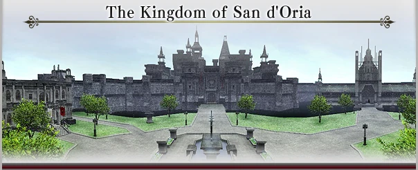
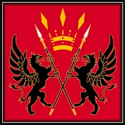
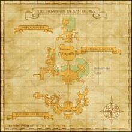

Level 75 reference · Zenith rules






This kingdom of proud Elvaan warriors is situated to the north of the Quon continent and was built on the ashes of a brutal civil war. It has been ruled by a succession of kings from the d'Oraguille royal family for a span of more than five hundred years.
The kingdom's capital of San d'Oria is a walled city defended by two orders of knights: the Royal Knights, who patrol the country's borders and seek to expand its territories, and the Temple Knights, responsible for protecting the city itself and maintaining domestic tranquility.
Culture
Despite the fact that San d'Oria's culture revolves around the use of iron, it is a technologically stagnant society. However, with traditional methods passed down over generations, San d'Orian bladesmiths forge weapons that rival the swords of the East and are known throughout the world for their quality.
Living Standards
The ancient forest capital shows signs of deterioration, but with population growth in a state of gentle decline and many residences left vacant, overcrowding has not become an issue.
The region is also blessed with an abundance of fertile land for crops, and food is plentiful. However, heavy taxes and long military tenures leave few hands to work the fields, making life a challenge for the citizens of San d'Oria.
Climate
Even though it lies in a relatively cold region, San d'Oria has long been able to export its verdant crops of wheat and rye, along with shipments of lumber, through the independent town of Selbina. Also, large imported Selbina sheep can be seen grazing in the furthest reaches of the kingdom.
Military Organization
The San d'Orian army is divided into two arms: the Royal Knights and the Temple Knights. As well as having different duties, both orders are structured in different ways.
The Royal Knights
The Royal Knights are under the direct command of the king, forming the backbone of the San d'Orian army. Their main duties include regular punitive expeditions against the beastmen, along with patrolling and defending the country's borders. The order consists of around one hundred units led by a general. A single unit is headed by one Royal Knight, with a retinue of two to three Royal Swordsmen and four to five Royal Squires of the same bloodline. The body of the unit is made up of around sixty Royal Archers and Royal Spearmen. A Grand Knight of the Realm has ten Royal Knights as subordinates, and accordingly commands a force ten times the strength of a normal unit. The Royal Knights are generally well-trained Elvaan nobles or Elvaan adventurers with extensive battle experience--men and women of unfailing morale and unquestionable loyalty to the crown. In times of war, numbers are bolstered by provincial troops from all corners of the kingdom.
The Temple Knights
The Temple Knights are a religious order charged with maintaining civil harmony within the capital. In times of peace, the Temple Knights are responsible for arresting criminals and heretics, providing security for the Chateau d'Oraguille and the cathedral, and putting down civil strife. When war engulfs the kingdom, they are often sent to the battlefield; in war, their duties extend to holding prayers for victorious outcomes and punishing crime and acts of immorality within the San d'Orian army. The Order of the Temple Knights consists of around sixty units led by a general. An average unit is formed by thirty Myrmidons under the command of a Temple Knight and ten Temple Squires who have been baptized by the papsque. A Grand Temple Knight has ten Temple Knights as subordinates, and accordingly commands a force ten times the strength of a normal unit.
All funding for Temple Knight activities comes from the San d'Oria Cathedral, so while they are theoretically under the command of the king, any large-scale mobilization requires the permission of the papsque.
The Royal Guard
The Royal Guard is unit of knights responsible for the protection of the king and the royal family. Exact numbers are unknown, but this unit is thought to hold close to one hundred members, traditionally chosen from the two orders of knights. It is considered to be an extremely high honor to be offered a position in the Royal Guard, and recently many adventurers of remarkable achievements can be found within their ranks.
The Reserve Knights
This title is given to mercenary and volunteer groups that have been officially sanctioned by the King of San d'Oria. Since they are only paid during times of war, most members of these groups take up adventuring while waiting for the call to arms.
Total:
Royal Knights: ~ 7000
Temple Knights: ~ 2500
Royal Guard: 100
Reserve Knights: …
Adapted from Eden Wiki: Category:San d'Oria · Contributors and history · CC BY-SA 4.0. Revision 45605. Layout, links and optional background text adapted for Zenith.